카드 한 장만 남기고, 설명은 필요한 순간에만 보여요
빠르게 정하고 넘기는 덱이 이 제품의 주인공인데, 지금은 왼쪽 패널과 원리를 설명하는 글이 카드와 자리를 다퉈요. 지금 화면을 세 크기와 두 언어로 찍어 진단하고, 왼쪽 패널을 메뉴 단추 하나로, 글 41곳을 지우거나 줄이거나 필요한 순간으로 옮긴 화면을 그렸어요. v2에서는 화면 속 글을 영어로 바꾸고, 비서의 이름을 토마토로, 위험한 답의 확인을 꾹 누르기로 다시 그렸어요. 아직 구현 전이고, 화면 속 이름과 숫자는 예시예요.
왼쪽 패널은 메뉴 단추 하나
넓은 화면에서도 기본은 숨김이에요. 왼쪽 위 단추를 누르면 지금의 서랍이 열리고, 고정하면 그 기기에서는 늘 보여요. 메뉴는 누를 수 있는 여덟 줄만 남겨요.
위험한 답은 꾹 눌러서
소유자의 제안이에요. 위험한 답 줄을 누르고 있으면 카드를 밀 때처럼 줄이 차오르고, 다 찬 뒤 놓으면 실행돼요. 도중에 떼면 아무 일도 없어요. 키보드에는 지금의 한 번 더 누르기를 남겨요.
영어 먼저, 이름은 토마토, 덱의 손맛은 그대로
제품의 기본 언어는 영어이고 비서의 이름은 토마토예요. 가운뎃점으로 낱말을 잇지 않아요. 한 장씩, 밀기, 번호 키, 10초 되돌리기는 바꾸지 않아요.
왼쪽 패널을 없애면, 다른 화면으로 가는 길을 어디에 둘까요
덱 말고 화면이 일곱 개 더 있어요. 가는 길과 남은 개수 같은 신호를 둘 자리를 셋으로 그려 봤고, A를 추천해요. 소유자가 말한 “왼쪽 패널이 굳이 필요 없는 화면”에 가장 가깝고, 아이폰이 이미 쓰는 서랍을 넓은 화면에 그대로 쓰기 때문이에요.
패널은 서랍이 되고, 덱이 화면 전부
핵심 한 수 왼쪽 위 단추 하나가 사이드바를 대신해요. 고정하면 지금 모습이 돼요
좋은 점
- 카드 말고 눈이 갈 곳이 없어요
- 세 크기가 같은 구조예요. 아이폰의 서랍을 그대로 써서 새로 만들 것이 적어요
- 패널이 필요한 사람은 고정하면 돼요
대가
- 다른 화면은 두 번 눌러야 가요
- 개수가 점 하나로 줄어요. 몇 개인지는 열어야 보여요
- Apple 지침은 기본으로 숨기지 말라고 해요. 처음 쓰는 사람이 다른 화면을 못 찾을 수 있어요
좁은 띠에 아이콘 여덟과 개수
핵심 한 수 패널을 56 폭으로 줄이고 글자를 뺀 채 늘 세워 둬요
좋은 점
- 어느 화면이든 한 번에 가요
- FYI와 미뤄 둔 것의 개수가 늘 보여요
대가
- 이름 없는 아이콘 여덟 개를 외워야 해요
- 왼쪽 패널이 여전히 있어요. 없애 달라는 요청과 어긋나요
- 아이폰에는 띠를 세울 수 없어 구조가 둘이 돼요
위 막대의 제목을 눌러 화면을 바꿔요
핵심 한 수 따로 메뉴 단추 없이, 화면 제목이 다른 화면으로 가는 길이에요
좋은 점
- 왼쪽에 아무것도 없어요
- 지금 어디인지와 어디로 갈 수 있는지가 한 자리예요
대가
- 제목이 눌린다는 것을 알기 어려워요
- 설정과 로그아웃은 갈 곳이 따로 필요해서 결국 단추가 둘이 돼요
- 새 부품이고, 아이폰에서는 시트로 다시 그려야 해요
선례: Superhuman의 묶음 전환(공식 화면은 확인하지 못했어요), Things의 이동 팝오버
카드 한 장을 보는 화면에, 카드가 아닌 것이 서른 줄쯤 있어요
예시 모드와 실제 모드(영어 시험 계정)를 띄워 1440×900, 1194×834, 390×844로 찍었어요. 덱 화면에서 눈이 가야 할 것은 질문, 추천, 다음 카드인데, 왼쪽 패널 스무 줄과 위 막대, 키 표시, 설명 글이 같은 무게로 서 있어요. 한국어로도 같은 화면을 찍어 봤고, 한국어에서만 깨지는 곳은 없었어요.
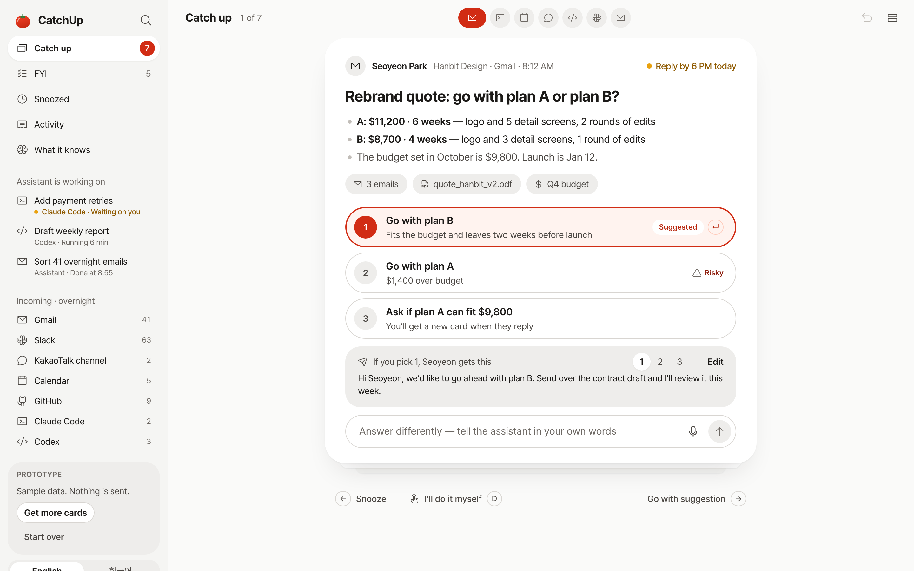
12345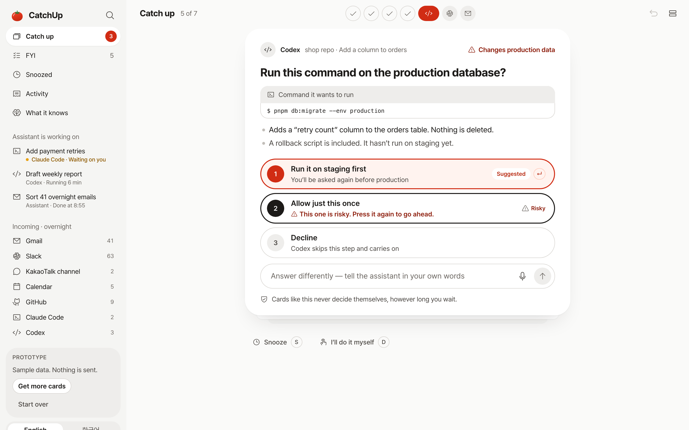
7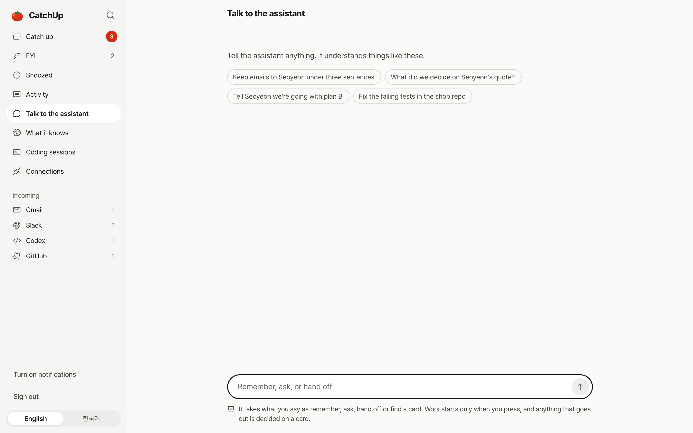
6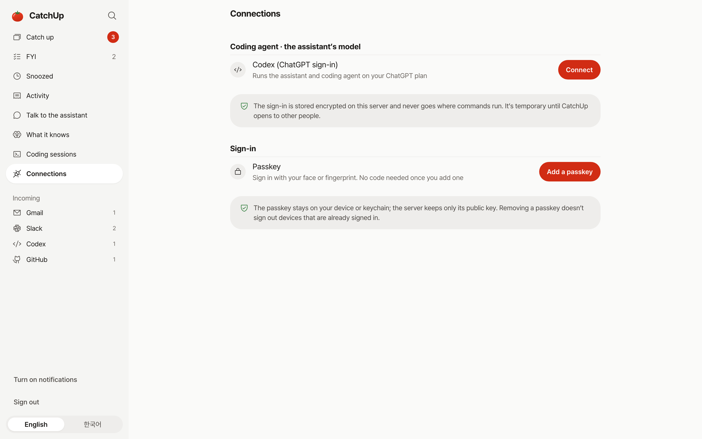
6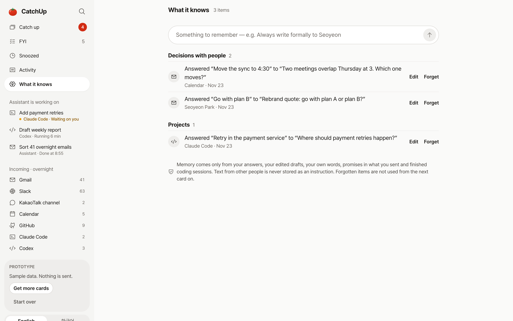
6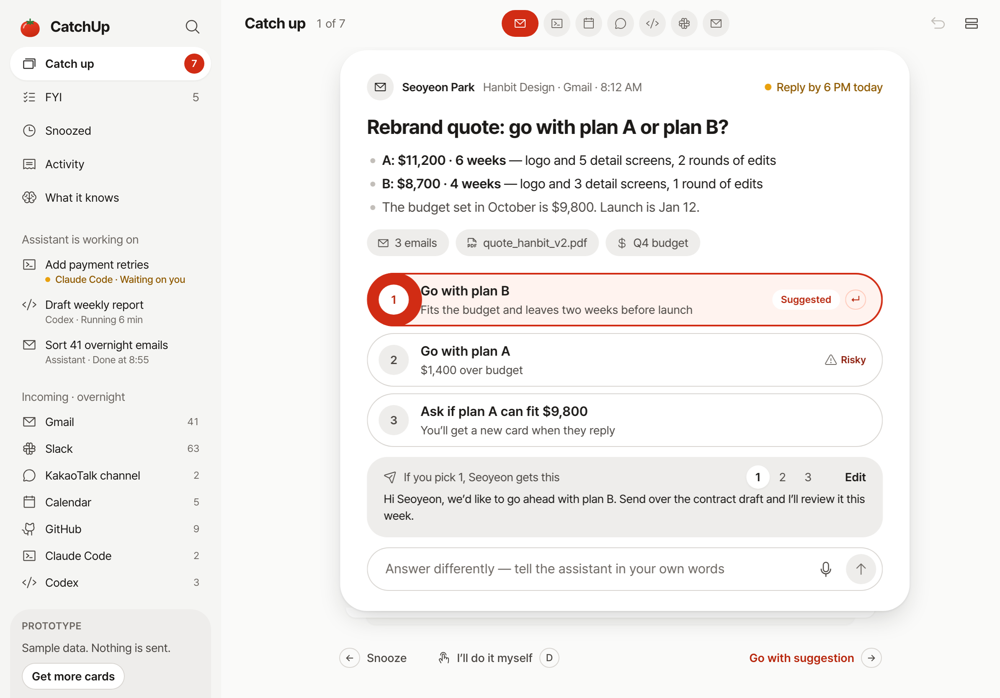
8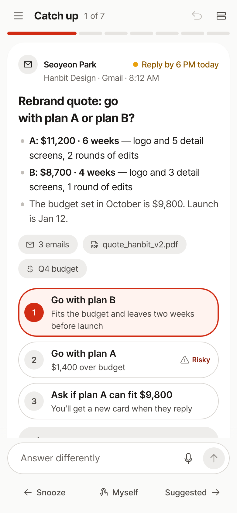
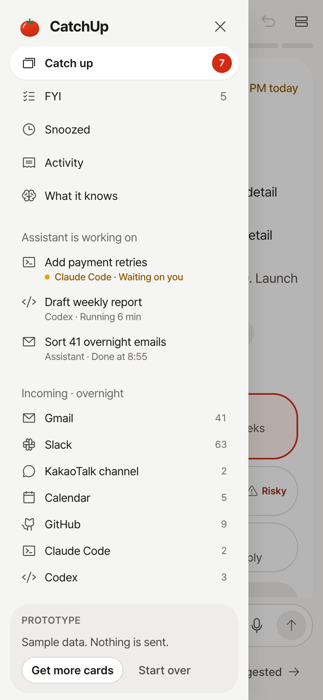
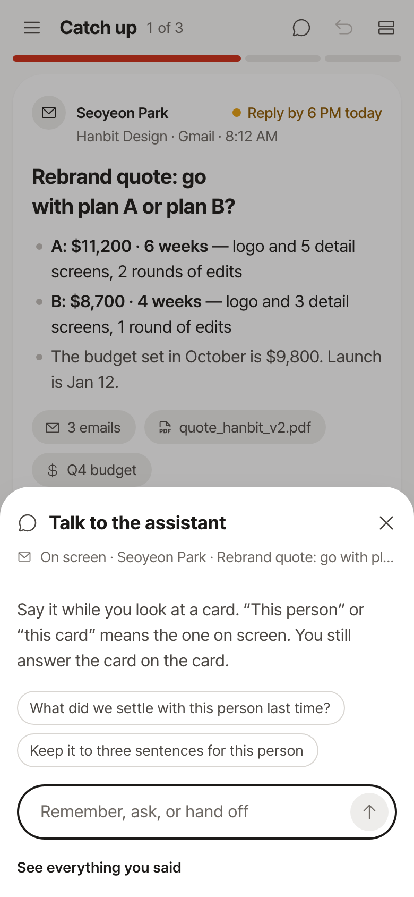
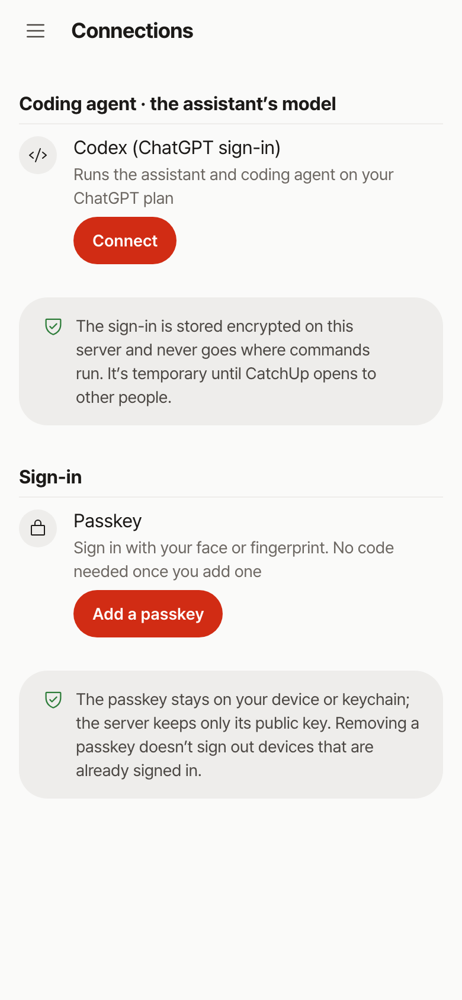
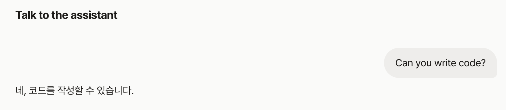
- 왼쪽 패널이 카드와 다퉈요. 264 폭에 스무 줄쯤 있고, 그중 누를 수 있는 것은 다섯 줄(실제 모드 여덟 줄)이에요. Assistant is working on 세 줄과 Incoming 일곱 줄은 읽기만 하는 정보예요. components/Sidebar.tsx — cu-run ×3, cu-src-row ×7
- 남은 양을 세 번 말해요. 패널의 빨강 배지 7, 위 막대의 “1 of 7”, 출처 아이콘 동그라미 일곱 개가 같은 뜻이에요. 아이폰은 여기에 막대가 하나 더 있어요. screens/Catchup.tsx:61-69, 77 — cu-steps, cu-pbar
- 위 막대의 되돌리기 단추는 토스트와 같은 때에만 켜져요. 답을 기다리는 10초 동안만 누를 수 있는데, 그때는 토스트에 Undo가 있고 Z 키도 있어요. 나머지 시간에는 흐린 채로 자리를 차지해요. screens/Catchup.tsx:72 — disabled={!s.pending.length}
- 카드 한 장에 덩어리가 일곱이에요. 출처 줄, 질문, 요약, 근거 알약 셋, 답 셋, 나갈 글, 입력창이에요. 근거 알약은 누를 수 없는데 단추 모양이고, 나갈 글의 머리는 “If you pick 1, Seoyeon gets this”처럼 문장이에요. components/DecisionCard.tsx:65, 157 — cu-chip, card.ifPick
- 추천대로를 네 가지로 보여 줘요. 1번 줄, 그 줄의 ↵, 아래의 Go with suggestion →, 밀기예요. 키 표시는 ↵ ← D → 넷이 늘 보여요. screens/Catchup.tsx:89-92, DecisionCard.tsx:103 — cu-kbd ×4
- 원리를 설명하는 글이 화면마다 붙어 있어요. 비서 입력창 아래 한 줄, 덱 위 시트의 세 문장, 연결의 방패 상자 둘, 기억의 세 문장, 처음 화면의 약속, 로그인의 두 문장이에요. 읽지 않아도 쓸 수 있는 글이에요. live/Assistant.tsx:36, TalkSheet.tsx:41, Connections.tsx:90, 106, screens/Memory.tsx:58 — cu-foot, cu-promise
- 위험한 답의 확인이 빠른 두 번 누르기로 지나가요. 한 번 누르면 “This one is risky. Press it again to go ahead.”가 뜨고, 바로 한 번 더 누르면 실행돼요. 두 번 사이에 기다림이 없어서 습관처럼 두 번 누르면 읽기 전에 지나가요. 같은 카드가 위험을 네 번 말하는데, 맨 아래 한 줄은 원리 설명이에요. components/DecisionCard.tsx:75, 101, App.tsx:92 — card.risky, card.confirmHint
- 넓은 화면에서는 패널을 숨길 방법이 없어요. 폭이 1024 이상이면 늘 보이고, 아이패드 가로에서는 패널 아래 상자가 화면 밖으로 나가요. app.css — @media (min-width: 1024px), App.tsx:194
- 아이폰에서는 아래가 붐벼요. 나갈 글이 입력창 뒤로 반쯤 가려지고, 서랍에서는 언어와 계정 단추가 맨 아래로 밀려 스크롤해야 나와요. app.css — .phone-dock, .side-foot
- 화면의 언어와 모델에 가는 언어가 따로 놀아요. 화면은 브라우저에서 고른 언어를 쓰고, 모델은 계정을 만들 때 굳은 언어(기본값 한국어)로 쓰라는 지시를 받아요. 그래서 영어 화면에서 영어로 물어도 한국어로 답해요. 화면에서 언어를 바꿔도 서버에는 전해지지 않아요. apps/web/src/i18n.ts, services/api/migrations/0001 — cells.lang DEFAULT 'ko', codex/talk.rs:31
- 가운뎃점이 글을 대신해요. 덱 한 화면에 가운뎃점이 여덟 개예요(출처 줄 둘, 요약 둘, 패널 넷). 문구 파일에 11곳, 예시 카드에 56곳, 화면 코드가 이어 붙이는 곳이 14곳이에요. 비서도 the assistant, it으로만 불려서 이름이 없어요. locales/en.ts, data/cards.en.ts, live/Sessions.tsx:99 — join(' · ')
빠른 도구들은 패널을 접을 수 있게 하고, 설명은 부를 때만 보여 줘요
공식 도움말, changelog, 지침의 원문을 열어 확인한 것만 적었어요. 출처와 확인하지 못한 것은 레퍼런스 장에 있어요. 밀기와 토스트는 앞선 밀기 시안에서 이미 조사해서 여기서는 다시 다루지 않아요.
가져온 것
| 배운 것 | 어디서 | 이 시안에서 |
|---|---|---|
| 접는 키 하나 | Linear [, Things ⌘ /, Notion ⌘ \ | 메뉴 단추와 [ 키, 고정 단추 |
| 남은 수는 주인공 옆에 | Slack 모바일 Catch up | 위 막대의 “7 left” 하나 |
| 숫자 대신 점 | Linear의 사이드바 표시 설정, Apple의 배지 지침 | 메뉴 단추의 잉크 점 하나 |
?로 여는 키 목록 | Linear, Gmail | 화면의 키 표시를 걷고 한 곳에 모아요 |
| 짧게 누르면 안내, 꾹 누르면 실행 | Chrome의 ⌘Q(약 1초) | 위험한 답: 짧게 누르면 Hold to run, 꾹 누르면 차올라요 |
| 다 찬 뒤 놓을 때 실행 | Apple 긴급 SOS, WCAG 2.5.2 | 차오른 뒤 줄 안에서 놓으면 실행, 밖으로 끌면 취소 |
| 경고보다 되돌리기 | Raskin(2007), NN/g, Apple Alerts | 10초 되돌리기는 그대로 둬요 |
| 완전히 둥근 모양은 한 줄짜리에만 | ChatGPT, Gemini, Perplexity(직접 잰 값) | 아이폰의 답: 알약에는 이름만, 이유는 그 아래 |
가져오지 않은 것
| 무엇 | 어디서 | 이유 |
|---|---|---|
| 명령 찾기(Cmd+K) | Superhuman, Linear | 새 기능이에요. 화면이 여덟 개라 메뉴로 충분하고, 이번 일은 덜어 내는 일이에요 |
| 커서를 대면 잠깐 열림 | Linear | 아이패드와 아이폰에는 커서가 없어요. 단추와 키로 통일해요 |
| 아래 탭 막대 | Apple HIG(아이폰) | 덱의 입력창, 단추와 아래 자리가 겹쳐요. Q7로 남겼어요 |
| 키를 꾹 누르기 | 꾹 누르기를 키보드에도 그대로 | WCAG 2.1.1은 키를 오래 눌러야만 되는 조작을 허용하지 않아요. 키보드는 한 번 더 누르기예요 |
| 2초 넘는 누르기 | Motion의 기본값 2초 | Xbox 지침은 2~3초를 장벽으로 봐요. 뒤에 10초 되돌리기가 있어서 1초로 잡았어요 |
| 위험한 일 앞의 확인 창 | Carbon, Primer | 창은 덱의 흐름을 끊어요. 같은 줄에서 끝내는 쪽이 빨라요 |
| 글을 흐린 글로만 옮기기 | 흔한 줄이기 방법 | NN/g: 입력하면 사라져요. 꼭 필요한 말은 두지 않아요 |
화면에 카드 한 장과 단추 셋만 남아요
지금은 패널 스무 줄, 출처 동그라미 일곱, 키 표시 넷이 카드 둘레에 서 있었어요. 패널은 메뉴 단추로, 진행은 글 하나와 가는 막대로, 키 표시는 번호만 남겨요. 카드 안도 근거를 한 줄로, 나갈 글의 머리를 짧게 줄여서 눈이 질문, 추천, 다음 카드로 내려가게 해요.
Catch up
7 leftWhere should payment retries happen?
- Making failed payments retry up to 3 times.
- Right now retries only exist on the checkout page, so failed subscriptions just stop.
Rebrand quote: go with plan A or plan B?
- A: $11,200, 6 weeks — logo and 5 detail screens, 2 rounds of edits
- B: $8,700, 4 weeks — logo and 3 detail screens, 1 round of edits
- The budget set in October is $9,800. Launch is Jan 12.
Hi Seoyeon, we’d like to go ahead with plan B. Send over the contract draft and I’ll review it this week.
Catch up
7 leftWhere should payment retries happen?
- Making failed payments retry up to 3 times.
- Right now retries only exist on the checkout page, so failed subscriptions just stop.
Rebrand quote: go with plan A or plan B?
- A: $11,200, 6 weeks — logo and 5 detail screens, 2 rounds of edits
- B: $8,700, 4 weeks — logo and 3 detail screens, 1 round of edits
- The budget set in October is $9,800. Launch is Jan 12.
Hi Seoyeon, we’d like to go ahead with plan B. Send over the contract draft and I’ll review it this week.
- 메뉴 단추 하나가 왼쪽 패널을 대신해요. 점은 덱 밖에 새로 온 것(새 소식, 끝난 코딩 세션)이 있다는 뜻이에요. 빨강 배지는 쓰지 않아요. 빨강은 고를 곳에만 쓰는 색이에요.
- 남은 수는 한 번만 말해요. “7 left”와 카드 위의 가는 막대가 한 쌍이에요. 출처 아이콘 동그라미 일곱은 없어져요. 어디서 온 카드인지는 카드 첫 줄에 있어요.
- 위 막대의 도구는 둘이에요. 토마토에게 말하기와 목록 보기예요. 되돌리기 단추는 빠져요. 되돌릴 수 있는 10초 동안에는 가운데 자리에 토스트가 서요.
- 근거는 글 한 줄이에요. 알약 셋은 누를 수 없는데 단추처럼 보였어요. 종이 클립 하나와 흐린 글로 낮추고, 쉼표로 이어요.
- 나갈 글의 머리는 “Reply to Seoyeon”이에요. “If you pick 1, Seoyeon gets this”라는 문장을 이름표로 바꿨어요. 몇 번의 글인지는 옆의 번호 탭이 말해요.
- 아래 단추에서 키 표시가 빠져요. ← D → ↵는
?로 여는 키 목록과 마우스를 올렸을 때만 보여요. 단추의 자리(왼쪽은 미루기, 오른쪽은 추천대로)는 미는 방향 그대로예요.
키 목록, ?를 눌렀을 때
Catch up
7 leftWhere should payment retries happen?
- Making failed payments retry up to 3 times.
- Right now retries only exist on the checkout page, so failed subscriptions just stop.
Rebrand quote: go with plan A or plan B?
- A: $11,200, 6 weeks — logo and 5 detail screens, 2 rounds of edits
- B: $8,700, 4 weeks — logo and 3 detail screens, 1 round of edits
- The budget set in October is $9,800. Launch is Jan 12.
Hi Seoyeon, we’d like to go ahead with plan B. Send over the contract draft and I’ll review it this week.
- 키는 부르면 보여요.
?를 누르거나 메뉴의 Settings에서 열어요. 지금 앱이 받는 키 그대로이고, 새로 생기는 키는 메뉴를 여닫는[와 이 목록을 여는?둘이에요. 답의 번호는 답 줄에 늘 보여요.
아이폰은 구조가 이미 맞아요. 줄이는 것만 같이 줄여요
아이폰은 지금도 패널이 서랍이고 덱이 화면 전부예요. 그래서 넓은 화면이 아이폰을 따라가는 셈이에요. 여기서는 위 막대의 도구, 근거, 메뉴 안을 같은 규칙으로 줄여요. 아래의 입력창과 단추 셋은 밀기 시안에서 정한 그대로 둬요.
지금
시안, 평소
Where should payment retries happen?
- Making failed payments retry up to 3 times.
- Right now retries only exist on the checkout page, so failed subscriptions just stop.
Rebrand quote: go with plan A or plan B?
- A: $11,200, 6 weeks — logo and 5 detail screens, 2 rounds of edits
- B: $8,700, 4 weeks — logo and 3 detail screens, 1 round of edits
- The budget set in October is $9,800. Launch is Jan 12.
Hi Seoyeon, we’d like to go ahead with plan B. Send over the contract draft and I’ll review it this week.
- 메뉴 단추에 점이 붙어요. 넓은 화면과 같은 단추, 같은 뜻이에요.
- 도구는 둘이에요. 되돌리기 단추가 빠진 자리에 남은 수가 편하게 들어가요.
- 근거가 한 줄이 돼요. 알약 두 줄이 종이 클립 하나와 글 한 줄로 줄어요.
- 아래는 그대로예요. 단추 셋의 자리는 미는 방향이에요. 가운데 단추의 글만 Myself에서 I’ll do it으로 바꿔요.
- 답은 알약에 번호와 이름만 담아요. 이유는 알약 아래의 작은 글이에요. 글이 길어져도 알약은 반원 그대로예요. 왜 이렇게 했는지는 다음 장에 있어요.
메뉴를 열었을 때
지금
시안
- 여덟 줄이 한 화면에 들어와요. 지금은 스무 줄이라 언어와 계정이 화면 밖에 있었어요.
- Settings를 누르면 그 자리에서 펼쳐져요. 언어, 알림, 로그아웃이 엄지 닿는 아래쪽에 있어요.
알약에는 이름 한 줄만 담고, 이유는 그 아래에 둬요
답 줄은 알약 안에 번호, 이름, 이유를 모두 넣고 세로 가운데에 맞춰요. 넓은 화면에서는 늘 두 줄이라 반원으로 보이는데, 아이폰에서는 글이 서너 줄이 돼서 반지름 30짜리 덩어리 셋이 높이가 제각각으로 쌓여요. ChatGPT, Gemini, Perplexity를 열어 재 보니 셋 다 같은 규칙이었어요. 완전히 둥근 모양은 한 줄짜리에만 쓰고, 제목과 설명이 같이 들어가는 칸에는 쓰지 않아요. 그래서 아이폰에서는 알약에 번호와 이름만 담고, 이유는 알약 아래로 내려요.
지금
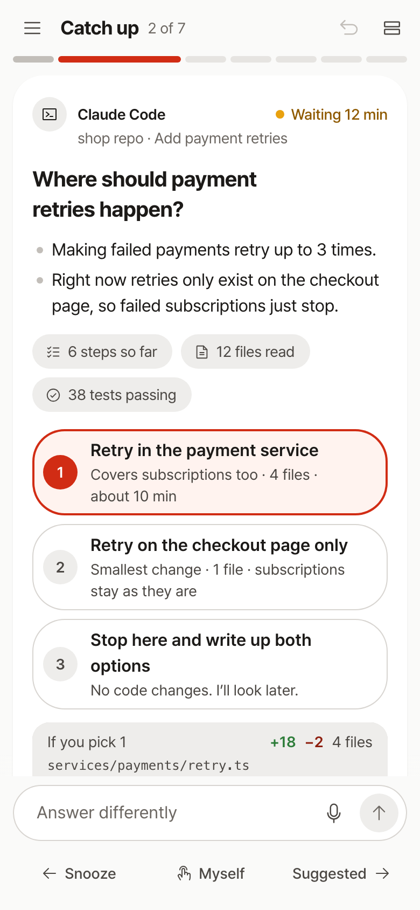
시안, 같은 카드
Where should payment retries happen?
- Making failed payments retry up to 3 times.
- Right now retries only exist on the checkout page, so failed subscriptions just stop.
- 알약에는 번호와 이름만 있어요. 높이 48에 반지름 24라서 한 줄일 때 반원이에요. 번호 동그라미가 왼쪽 끝 곡선과 같은 중심에 앉아요. 굵은 이름만 훑어도 고를 수 있어요.
- 이유는 알약 아래의 작은 글이에요. 테두리 밖이라 두 줄이 돼도 알약의 모양을 건드리지 않아요. 이름과 같은 자리에서 시작해요.
- 이름이 두 줄이 되면 알약이 아래로 길어져요. 반지름은 24 그대로예요. ChatGPT와 Gemini의 입력창이 여러 줄이 될 때와 같은 규칙이에요. 번호는 첫 줄 옆에 그대로 있어요.
다른 제품에서 잰 것
완전히 둥근 모양은 한 줄짜리에만 있었어요
2026-11-23에 로그인하지 않은 화면을 열어 모서리 값을 쟀어요. 입력창에는 줄바꿈을 넣어 여러 줄일 때도 쟀어요.
| 제품 | 한 줄일 때 | 여러 줄일 때 |
|---|---|---|
| ChatGPT 입력창 | 높이 52, 반지름 28. 거의 반원 | 반지름 28 그대로, 높이만 88로. 단추들이 글 옆에서 아래 줄로 내려가요 |
| Gemini 입력창 | 높이 64, 반지름 32. 반원 | 반지름 32 그대로, 높이 112. 단추들이 아래 줄로 내려가요 |
| ChatGPT의 단추 | 한 줄 단추는 높이 44에 끝까지 둥글게 | 아이콘과 글이 있는 목록 줄은 반지름 12 |
| Gemini의 안내 칸 | 한 줄 단추는 끝까지 둥글게 | 제목과 설명 두 줄이 든 칸은 반지름 24 |
| Perplexity | 한 줄 단추는 높이 24~32에 끝까지 둥글게 | 제목과 설명이 든 칸은 반지름 11, 입력창은 26 |
디자인 시스템 문서도 같은 말을 해요. Material은 단추 글을 늘 한 줄로 두라고 하고, 정보가 많은 부품에는 완전히 둥근 모서리를 조심하라고 해요. Apple은 세로로 쌓는 글 단추에 캡슐 대신 둥근 사각형을 권해요. OpenAI의 공개 부품도 단추는 알약, 여러 줄 입력창은 24예요.
셋에서 겹치는 것은 둘이에요. 반지름은 한 줄일 때의 높이로 정하고, 줄이 늘어도 바꾸지 않아요. 그리고 여러 줄이 되면 글 옆에 있던 것들이 글의 흐름 밖으로 나가요.
여러 줄이 됐을 때의 모습
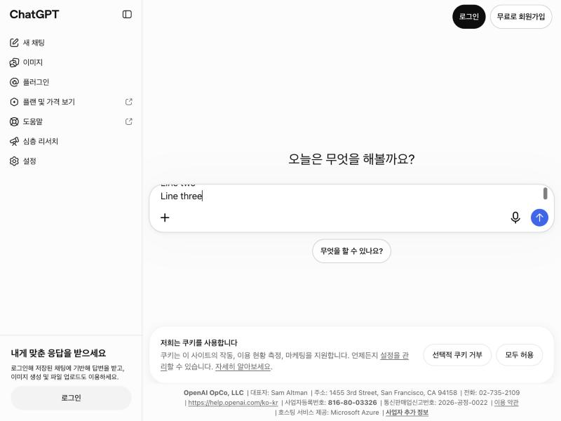
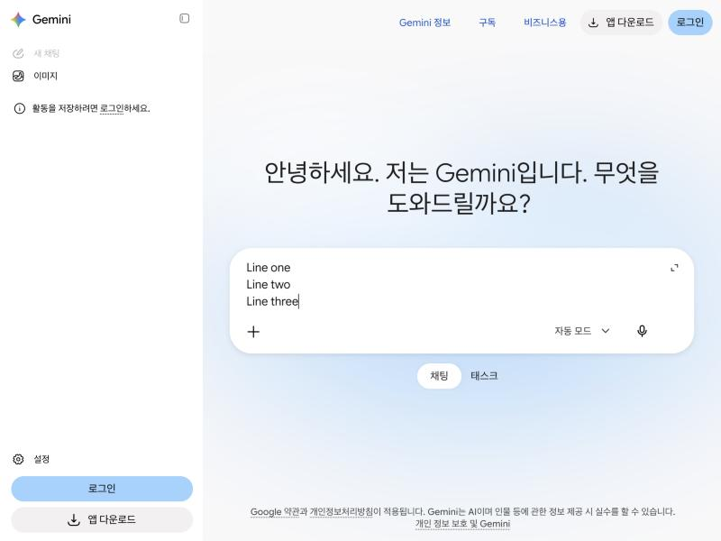
지금 화면에서 잰 것
아이폰 폭 375, 첫 카드의 답 셋이에요.
| 무엇 | 값 |
|---|---|
| 답 줄의 높이 | 80, 60, 60. 이유가 두 줄이 된 줄만 커져요 |
| 번호와 이름의 어긋남 | 세 줄짜리에서 번호의 중심이 이름 줄보다 20 아래에 있어요 |
| 모서리 | 반지름 30. 두 줄 높이(60)의 반이에요. 한 줄 높이의 반이 아니에요 |
| 글이 들어가는 폭 | 235. Risky 꼬리표가 붙은 줄은 185 |
packages/design-system/components.css — .cu-opt { align-items: center; border-radius: var(--cu-r-card) }, apps/web/src/app.css:250
같이 정한 것과 대가
견줘 본 다른 세 모양
Where should payment retries happen?
- Making failed payments retry up to 3 times.
- Right now retries only exist on the checkout page, so failed subscriptions just stop.
Where should payment retries happen?
- Making failed payments retry up to 3 times.
- Right now retries only exist on the checkout page, so failed subscriptions just stop.
Where should payment retries happen?
- Making failed payments retry up to 3 times.
- Right now retries only exist on the checkout page, so failed subscriptions just stop.
위험한 답은 꾹 누르면 차오르고, 다 차서 놓으면 실행돼요
지금은 같은 줄을 한 번 더 누르면 실행돼서, 빠르게 두 번 누르면 읽기 전에 지나가요. 소유자의 제안대로 위험한 답 줄을 누르고 있으면 카드를 밀 때처럼 줄이 왼쪽부터 차오르게 바꿔요. 밀기와 같은 문법이라 새로 배울 것이 적고, 일부러 하는 동작이라 실수로는 일어나지 않아요. 색은 빨강이 아니라 잉크예요. 빨강은 추천 답에만 쓰는 색이에요.
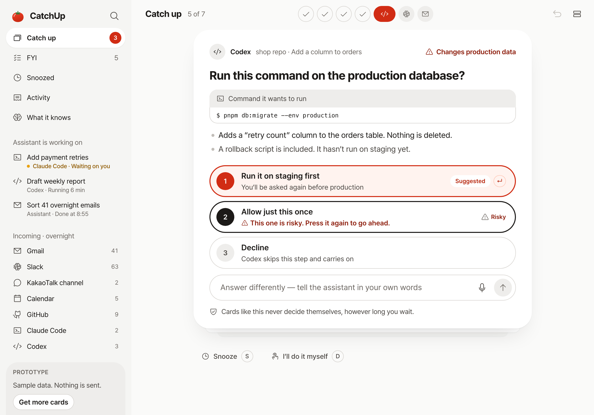
Catch up
3 leftRun this command on the production database?
- Adds a “retry count” column to the orders table. Nothing is deleted.
- A rollback script is included. It hasn’t run on staging yet.
Catch up
3 leftRun this command on the production database?
- Adds a “retry count” column to the orders table. Nothing is deleted.
- A rollback script is included. It hasn’t run on staging yet.
- 무엇이 위험한지는 카드 오른쪽 위에 남아요. “Changes production data”는 경고 아이콘과 함께 그대로예요. 이 글이 있으면 카드는 밀리지 않아요.
- 누르고 있는 만큼 줄이 잉크로 차올라요. 약 1초면 다 차요. 추천 답이 밀 때 빨강으로 차오르는 것과 같은 움직임이고, 글자색도 경계에서 바뀌어요. 도중에 떼거나 줄 밖으로 끌면 처음으로 돌아가고 아무 일도 일어나지 않아요.
- 입력창 아래가 비어요. “Cards like this never decide themselves”가 있던 자리예요. 밀면 토스트가 “Can’t be decided by swiping”이라고 말해요.
- 추천대로 단추가 없어요. 지금과 같아요. 오른쪽 단추가 없다는 것이 밀어서 정할 수 없다는 표시예요.
세 순간, 아이폰
Run this command on the production database?
- Adds a “retry count” column to the orders table. Nothing is deleted.
- A rollback script is included. It hasn’t run on staging yet.
Run this command on the production database?
- Adds a “retry count” column to the orders table. Nothing is deleted.
- A rollback script is included. It hasn’t run on staging yet.
Run this command on the production database?
- Adds a “retry count” column to the orders table. Nothing is deleted.
- A rollback script is included. It hasn’t run on staging yet.
같이 정한 것
대가와 걸리는 것
놓은 뒤 10초
Catch up
2 leftWhere should payment retries happen?
- Making failed payments retry up to 3 times.
- Right now retries only exist on the checkout page, so failed subscriptions just stop.
- 토스트는 위 막대 가운데에 서요. 지금과 같은 자리예요. 꾹 눌러 정한 답도 다른 답과 똑같이 10초를 기다렸다가 실행돼요. 되돌리기는 여기와 Z 키 두 곳이에요.
규칙은 입력창 아래의 글이 아니라, 누르는 단추가 지켜요
소유자가 짚은 한 줄(“It takes what you say as remember, ask, hand off or find a card…”)을 없애요. 그 글이 말하던 것은 화면이 이미 해요. 기억은 바로 되돌릴 수 있고, 일을 맡기거나 카드에 말을 전하려면 단추를 눌러야 해요. 이름도 the assistant에서 Tomato로 바꿔요. 캐릭터가 이미 토마토예요.
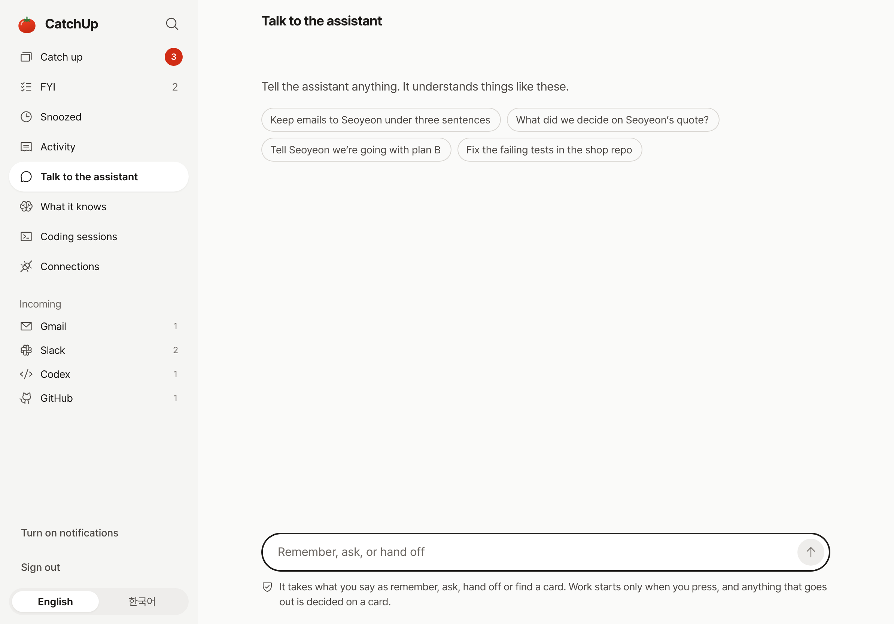
Talk to Tomato
Emails to Seoyeon stay under three sentences.
Find the failing tests in the shop repo and fix them.
Rebrand quote: go with plan A or plan B?
Talk to Tomato
Emails to Seoyeon stay under three sentences.
Find the failing tests in the shop repo and fix them.
Rebrand quote: go with plan A or plan B?
- 기억한 것은 그 자리에서 되돌려요. 규칙을 글로 쓰는 대신, 기억에 넣었다는 한 줄과 Undo가 있어요. 지금 화면에 이미 있는 것이에요.
- 밖으로 이어지는 일에는 단추가 있어요. “Answer with these words”를 눌러야 말이 카드로 가고, “Hand it off”를 눌러야 코딩 세션이 시작돼요. “Work starts only when you press”는 글이 아니라 이 단추예요.
- 입력창 아래에는 아무것도 없어요. 할 수 있는 말은 흐린 글 한 줄(“Remember, ask, or hand off”)이 알려 줘요. 처음에는 예시 칩 넷이 그 위에 떠요. 토마토는 사람이 쓴 말의 언어로 답해요.
덱 위의 시트, 아이폰
지금
시안
Where should payment retries happen?
- Making failed payments retry up to 3 times.
- Right now retries only exist on the checkout page, so failed subscriptions just stop.
Rebrand quote: go with plan A or plan B?
- A: $11,200, 6 weeks — logo and 5 detail screens, 2 rounds of edits
- B: $8,700, 4 weeks — logo and 3 detail screens, 1 round of edits
- The budget set in October is $9,800. Launch is Jan 12.
Hi Seoyeon, we’d like to go ahead with plan B. Send over the contract draft and I’ll review it this week.
Talk to Tomato
- 보고 있는 카드는 한 줄로 남아요. this person이 누구인지 알려 주는 정보라서 그대로 둬요. 앞의 “On screen”은 빼요.
- 세 문장 대신 예시 칩 둘이에요. “What did we settle with this person?”이 this person을 알아듣는다는 것을 보여 줘요.
- 시트가 낮아져요. 세 문장이 빠진 만큼이에요. 지금은 답이 하나도 보이지 않았는데, 추천 답까지 보여요.
보안 설명은 그 일을 하는 순간에만 보여요
연결 화면에는 초록 방패 상자가 둘, 기억 화면에는 세 문장이 늘 있었어요. 틀린 말은 아니지만 대부분의 방문에서는 읽을 일이 없어요. 로그인을 맡기려는 순간, 패스키를 지운 직후, 궁금해서 ⓘ를 누른 때로 옮겨요. 속임수를 막는 한 문장(“Only enter a code you got on this screen”)은 코드와 함께 남겨요.
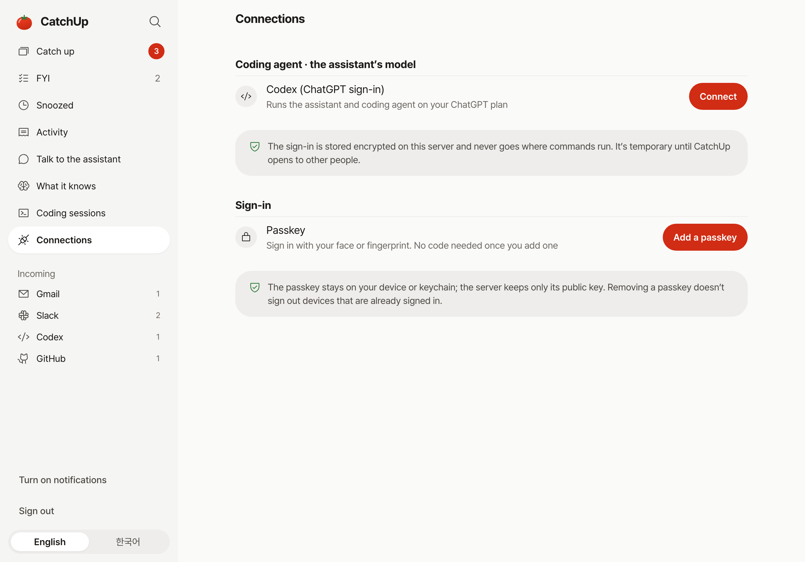
Connections
Enter this code in ChatGPT
K7QD-M2XP
Connections
Enter this code in ChatGPT
K7QD-M2XP
- 코드 옆의 한 줄은 남겨요. 남이 보낸 코드를 넣게 하는 속임수를 막는 말이에요. “Your sign-in is stored encrypted on this server”도 로그인을 맡기는 이 순간에만 보여요.
- 시간 제한은 문장이 아니라 숫자예요. “It expires in about 15 minutes” 대신 “14 min left”가 줄어들어요.
- 패스키 설명 상자가 없어요. Remove를 누른 직후 토스트가 “Passkey removed. Devices already signed in stay signed in.”이라고 말해요. 그 말이 필요한 때가 그때예요.
토마토가 아는 것, 아이폰
지금
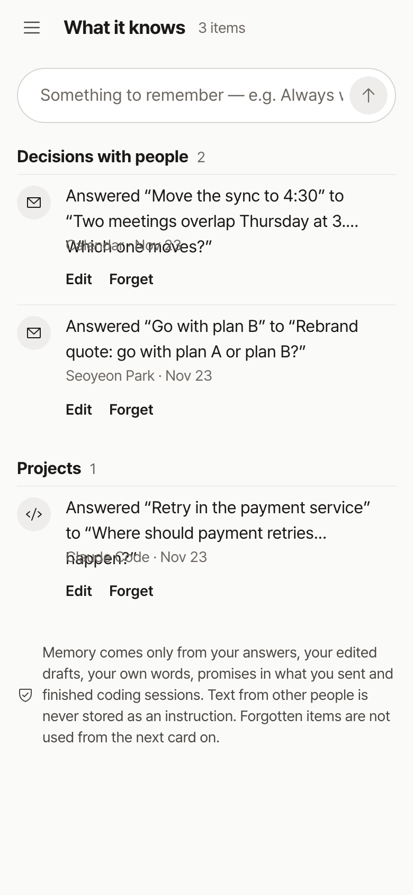
시안, ⓘ를 눌렀을 때
- 설명은 ⓘ 뒤에 있어요. 목록 아래 다섯 줄을 없애고, 제목 옆 단추를 누르면 두 문장이 떠요. 한 번 누르면 닿는 깊이까지만 둬요.
- 목록 아래가 비어요. 설명이 있던 자리예요. 기억이 늘어나도 맨 아래까지 내려가 읽을 글이 없어요.
덱이 끝나면, 화면이 다음 갈 곳을 말해요
패널이 없으면 다른 화면을 언제 떠올리느냐가 문제예요. 답은 덱이 끝난 순간이에요. 이 화면은 지금도 남은 것을 보여 주는데, 비서가 알아서 한 일 아래에 있었어요. 남은 것을 위로 올려서 이 화면이 다른 화면으로 가는 문이 되게 해요.
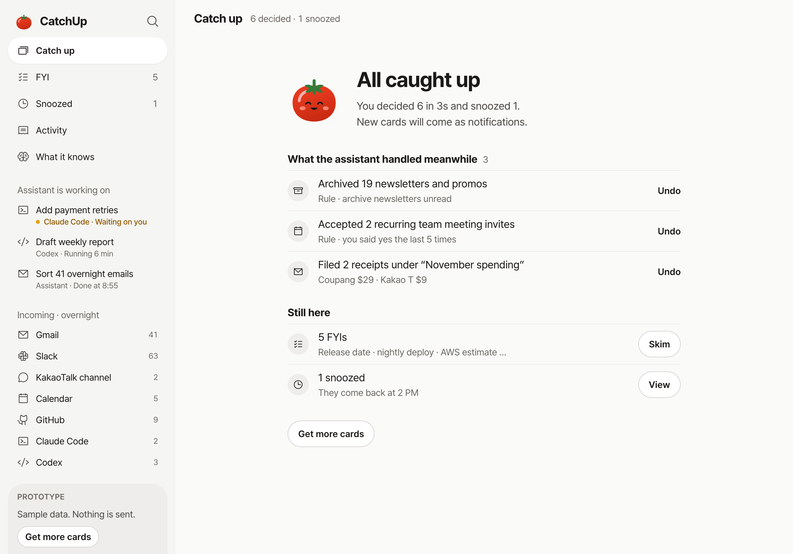
Catch up
6 decided, 1 snoozedAll caught up
You decided 6 in 1m 42s and snoozed 1.
Catch up
6 decided, 1 snoozedAll caught up
You decided 6 in 1m 42s and snoozed 1.
- 머리말은 한 줄이에요. “New cards will come as notifications”를 뺐어요. 얼마나 빨리 끝냈는지만 남겨요.
- 남은 것이 먼저 와요. FYI 5개, 미뤄 둔 것 1개와 가는 단추예요. 메뉴를 열지 않아도 다음 덱으로 넘어가요.
- 메뉴 단추의 점이 같은 것을 가리켜요. 덱을 보는 동안에는 점 하나였던 것이 여기서 개수와 이름으로 풀려요.
화면의 글 49곳을 하나씩 갈랐어요
기준은 하나예요. 그 글이 없어도 일을 마칠 수 있고 결과가 같다면 늘 보일 이유가 없어요. 지움 10, 줄임 13, 필요할 때만 6, 이름을 토마토로 6, 가운뎃점 빼기 6, 그대로 8이에요. 영어가 기본이라 지금 글과 제안을 영어로 적었고, 열쇠는 apps/web/src/locales/en.ts의 이름이에요. 한국어(ko.ts)는 같은 열쇠를 같은 뜻으로 옮겨요.
| 가름 | 문구 열쇠, 보이는 곳 | 지금 글(영어) | 제안(영어) | 이유 |
|---|---|---|---|---|
| 지움 | assistant.promise토마토 입력창 아래, 늘 보임 |
It takes what you say as remember, ask, hand off or find a card. Work starts only when you press, and anything that goes out is decided on a card. | (없음) | 규칙은 화면이 이미 지켜요. 일은 단추를 눌러야 시작하고, 카드에 전하는 말도 단추를 눌러야 가요. 글이 없어도 일어나는 일이 같아요. |
| 지움 | assistant.empty토마토 빈 화면 |
Tell the assistant anything. It understands things like these. | (없음) | 바로 아래 예시 칩 넷과 입력창의 흐린 글이 같은 말을 해요. |
| 지움 | assistant.deckEmpty덱 위 시트, 빈 화면 |
Say it while you look at a card. “This person” or “this card” means the one on screen. You still answer the card on the card. | (없음) | 보고 있는 카드 한 줄과 예시 칩이 같은 것을 보여 줘요. |
| 지움 | card.risky, card.riskyNoSwipe위험한 카드 맨 아래, 늘 보임 |
Cards like this can’t be swiped away and never decide themselves. | (없음) | 밀면 그 순간 토스트가 말해요(swipe.blocked). 뒷부분은 제품의 원리라 설계 문서에 둬요. |
| 지움 | codex.note 뒷문장연결, 초록 방패 상자 |
It’s temporary until CatchUp opens to other people. | (없음) | 운영 사정이라 화면에 둘 말이 아니에요. |
| 지움 | passkey.note 앞문장연결, 초록 방패 상자 |
The passkey stays on your device or keychain; the server keeps only its public key. | (없음) | 패스키의 일반 원리예요. 줄의 설명 한 마디로 충분해요. |
| 지움 | done.sub2다 봤어요 |
New cards will come as notifications. | (없음) | 알림을 켠 사람에게는 당연하고, 켜지 않은 사람에게는 틀린 말이에요. |
| 지움 | sessions.needLoginSub코딩 세션, 연결 전 |
One ChatGPT sign-in is all it takes | (없음) | 옆의 Connect 단추가 다음 할 일을 말해요. |
| 지움 | live.loginSub로그인 |
Enter your eight-digit code. It works once, for 10 minutes. | 입력칸의 흐린 글을 “8-digit code”로 | 시간 제한은 틀렸을 때 live.badCode가 말해요. |
| 지움 | fyi.sub 뒷부분, 소식 카드의 꼬리표FYI |
5 things worth knowing, nothing to decide | 5 left | 화면 제목이 이미 FYI예요. 카드 오른쪽 위의 FYI 꼬리표도 같이 빼요. |
| 줄임 | top.of덱 위 막대 |
1 of 7 | 7 left | 끝까지 얼마 남았는지가 넘기는 힘이 돼요. |
| 줄임 | card.ifPick, ifPickTell, ifPickCopy, codeIf카드, 나갈 글의 머리 |
If you pick 1, Seoyeon gets this If you pick 1, Claude Code is told this Pick 1 and the reply is copied for you If you pick 1 | Reply to Seoyeon Message to Claude Code Reply to copy Code change |
문장을 이름표로 바꿔요. 몇 번의 글인지는 옆의 번호 탭이 말해요. |
| 줄임 | card.composer카드 안 입력창 |
Answer differently — tell the assistant in your own words | Answer differently | 아이폰은 이미 이 글이에요(card.composerShort). |
| 줄임 | card.myself, card.myselfShort덱 아래 단추 |
I’ll do it myself Myself | I’ll do it | 두 크기가 같은 글을 써요. Myself만으로는 무슨 단추인지 알기 어려워요. |
| 줄임 | card.command카드, 명령 칸의 머리 |
Command it wants to run | Command | 질문이 이미 “Run this command…?”예요. |
| 줄임 | card.confirmHint, card.confirm위험한 답을 한 번 누른 뒤 |
This one is risky. Press it again to go ahead. | Hold to run (누르는 동안) Keep holding |
확인 방식이 ‘꾹 누르기’로 바뀌어요(7장). Risky는 같은 줄 오른쪽에 있어서 다시 쓰지 않아요. |
| 줄임 | first.promise처음 화면, 초록 방패 상자 |
At first it does nothing on its own. It asks about everything, and offers to take over only after the same answer keeps coming up. | It asks about everything at first. | 상자를 없애고 시작 단추 위에 한 줄로 둬요. |
| 줄임 | first.rows.agents처음 화면, 코딩 에이전트 줄 |
Cards when an agent has a question or needs approval | Cards when an agent asks | 승인도 묻는 것의 하나예요. |
| 줄임 | memory.tellPh기억, 입력창의 흐린 글 |
Something to remember — e.g. Always write formally to Seoyeon | Something to remember | 아이폰에서는 뒤가 잘려 보이지 않아요. |
| 줄임 | snoozed.emptySnoozed, 빈 화면 |
Nothing snoozed. Cards you put off land here. | Nothing snoozed. | 화면 이름이 이미 무엇이 오는 곳인지 말해요. |
| 줄임 | sessions.box코딩 세션, Start 단추 옆 |
Runs in a sandbox with no internet or secrets. Decisions come to you as cards. | Runs without internet. | 맡길 일을 쓸 때 알아야 하는 제약만 남겨요. |
| 줄임 | assistant.cardSaid토마토, 카드에 말을 전한 뒤 |
Passed to the card. Pick an answer there | Passed to the card | 옆에 See card가 있어요. |
| 줄임 | toast.snoozedUndo미룬 직후 토스트의 둘째 줄 |
Undo within 5 seconds | (미룬 카드의 질문) | 남은 시간은 고리가, 할 수 있는 일은 Undo 단추가 보여 줘요. |
| 필요할 때만 | 키 표시 ↵ ← → D S추천 답 줄, 덱 아래 단추, 늘 보임 |
(글자 키 다섯 개) | ?의 Keys 목록, 마우스를 올렸을 때 |
답의 번호 1~5는 답의 이름이라 그대로 둬요. |
| 필요할 때만 | memory.promise기억, 목록 아래, 늘 보임 |
Memory comes only from your answers, your edited drafts, your own words, promises in what you sent and finished coding sessions. Text from other people is never stored as an instruction. Forgotten items are not used from the next card on. | Only your answers, your edits, your own words and finished coding sessions. Forgotten items stop being used from the next card. | 제목 옆 ⓘ를 눌렀을 때만 보여요. |
| 필요할 때만 | codex.note 앞문장연결, 늘 보임 |
The sign-in is stored encrypted on this server and never goes where commands run. | Your sign-in is stored encrypted on this server. | 연결하는 동안에만, 코드 카드 안에 보여요. 로그인을 맡기려는 그 순간에 필요한 말이에요. |
| 필요할 때만 | codex.setting연결, 코드 카드, 늘 보임 |
If it fails, turn on device code sign-in under ChatGPT Settings › Security. | (글은 그대로) | 연결이 실패했을 때만, 실패 이유 옆에 보여요. |
| 필요할 때만 | passkey.note 뒷문장연결, 늘 보임 |
Removing a passkey doesn’t sign out devices that are already signed in. | Passkey removed. Devices already signed in stay signed in. | 지운 직후 토스트로 보여요. 기기를 잃어버려서 지우는 사람이 꼭 알아야 하는 때가 그때예요. |
| 필요할 때만 | proto.label, proto.note사이드바 아래 상자(예시 모드) |
Prototype. Sample data. Nothing is sent. | (글은 그대로) | 자리를 메뉴의 Settings 안으로 옮겨요. 덱을 보는 동안에는 보이지 않아요. |
| 이름 | nav.assistant메뉴, 화면 제목, 시트 제목 |
Talk to the assistant | Talk to Tomato | ‘비서’ 대신 ‘토마토’예요(소유자 결정). 한국어는 “토마토에게 말하기”. |
| 이름 | nav.memory, assistant.seeMemory메뉴, 화면 제목, 대화 속 링크 |
What it knows See what it knows | What Tomato knows See what Tomato knows |
it이 누구인지 이름으로 말해요. 한국어는 “토마토가 아는 것”. |
| 이름 | memory.tell기억, 입력창의 이름표 |
Tell the assistant | Tell Tomato | 화면 읽기 프로그램이 읽는 이름표예요. |
| 이름 | done.auto, log.auto다 봤어요, 처리 기록의 탭 |
What the assistant handled meanwhile By assistant | What Tomato handled meanwhile By Tomato |
같은 이름으로 맞춰요. |
| 이름 | first.sub처음 화면 |
The assistant reads what comes into the places you connect and turns only the decisions into cards. | Tomato reads what comes in and turns only the decisions into cards. | 처음 한 번 보는 제품 소개라 남기되, 이름을 넣고 짧게 해요. |
| 이름 | codex.section, codex.none연결 |
Coding agent · the assistant’s model Runs the assistant and coding agent on your ChatGPT plan | Codex Runs Tomato and the coding agent on your ChatGPT plan |
묶음 제목은 한 낱말로, 설명 줄에는 이름을 넣어요. |
| 가운뎃점 | top.doneSplit, log.routinesSub, done.fyiSub다 봤어요, 처리 기록 |
6 decided · 1 snoozed 3 learned from you · 1 set by you Release date · nightly deploy · AWS estimate … | 6 decided, 1 snoozed 3 learned from you, 1 set by you Release date, nightly deploy, AWS estimate |
나열은 쉼표로 써요. |
| 가운뎃점 | swipe.send, swipe.sendArmed, card.recall미는 동안의 토스트, 카드의 지난번 줄 |
Sends the reply · Seoyeon Release to send · Seoyeon Last time · … | Sends the reply to Seoyeon Release to send to Seoyeon Last time: … |
관계는 말(to)이나 쌍점으로 써요. |
| 가운뎃점 | assistant.seen덱 위 시트 |
On screen · Seoyeon Park · Rebrand quote… | Seoyeon Park, Rebrand quote… | 앞의 On screen도 빼요. 시트가 카드 위에 떠 있어서 무엇을 보고 있는지 알아요. |
| 가운뎃점 | first.rows.agents 제목, side.incoming처음 화면, 사이드바 |
Claude Code · Codex Incoming · overnight | Claude Code and Codex (목록째 빠져요) |
둘을 이을 때는 and를 써요. |
| 가운뎃점 | 화면 코드가 이어 붙이는 곳 14곳Sessions.tsx:99, Connections.tsx:58 · 96, talk.tsx:77 · 92, Catchup.tsx:114 · 140 · 148 등 |
Working · hanbit/shop Passkey · MacBook Pro Added Nov 21 · last used Nov 23 | Working, hanbit/shop Passkey on MacBook Pro Added Nov 21, last used Nov 23 |
문구 파일이 아니라 코드가 ' · '로 잇는 곳이에요. 쉼표로 잇거나 문장 틀로 바꿔요. |
| 가운뎃점 | 카드 내용예시 카드 cards.en.ts 56곳, 모델이 쓰는 카드 |
Hanbit Design · Gmail · 8:12 AM A: $11,200 · 6 weeks Covers subscriptions too · 4 files · about 10 min | Hanbit Design, 8:12 AM A: $11,200, 6 weeks Covers subscriptions too, 4 files, about 10 min |
출처(Gmail)는 아이콘이 이미 말해요. 모델이 쓰는 카드는 프롬프트에 ‘가운뎃점을 쓰지 않는다’를 넣어요(codex/sort.rs). |
| 그대로 | card.riskWord, 카드의 위험 기한 글위험한 답 줄, 카드 오른쪽 위 |
Risky Changes production data | (그대로) | 누르기 전에 무엇이 위험한지 보여야 해요. 경고 아이콘과 낱말을 함께 써요. |
| 그대로 | toast.runsSend, runsTell, runsDo, top.undo답을 고른 뒤 10초 |
Sends in 9s, Undo | (그대로) | 밖으로 나가기 전 마지막 기회예요. 확인 창 대신 되돌리기를 주는 방식이에요. |
| 그대로 | toast.undone, live.tooLate, live.conflict, live.changed되돌린 뒤, 늦었을 때, 그사이 바뀌었을 때 |
Undone. Nothing was sent. It already ran, so it can’t be undone. The card changed. Take another look. | (그대로) | 나갔는지 안 나갔는지는 사람이 꼭 알아야 해요. 그 순간에만 떠요. |
| 그대로 | swipe.*미는 동안의 토스트 |
Release to send Can’t be decided by swiping | (가운뎃점만 빼요) | 놓으면 일어날 일을 놓기 전에 말해요. 미는 동안에만 보여요. |
| 그대로 | codex.only 앞문장연결, 코드 카드 |
Only enter a code you got on this screen just now. It expires in about 15 minutes. | Only enter a code you got on this screen. 14 min left |
앞 문장은 남이 보낸 코드를 넣게 하는 속임수를 막아요. 뒷문장은 줄어드는 숫자로 바꿔요. |
| 그대로 | first.rows.slack, first.rows.kakao처음 화면 |
Only mentions and DMs Chats can’t be read. Add the channel to get cards in KakaoTalk | (그대로) | 무엇을 읽는지는 연결을 허락하는 근거예요. |
| 그대로 | memory.empty, sessions.empty, log.empty, top.none빈 화면의 한 줄 |
Nothing yet. It builds up as you answer cards. Nothing handed off yet. | (그대로) | 빈 화면은 다음에 할 일을 말해 주는 자리예요. 한 줄을 넘지 않아요. |
| 그대로 | passkey.noneHere, live.badCode, sessions.why.*, assistant.why.*오류가 났을 때 |
No passkey for this site was found on this device. Sign in with a code, then add one under Connections. | (그대로) | 무엇이 안 됐고 다음에 무엇을 하면 되는지 말해요. |
문구의 결, 둘 중 어느 쪽인가요
지금 문구가 마음에 들지 않는다고 하셔서, 같은 자리를 두 가지 결로 써 봤어요. 시안은 A(이름표)로 그렸어요. 마음에 드는 쪽이나 본보기를 알려 주시면 표 전체를 그 결로 다시 써요.
| 자리 | 지금 | A 이름표 (시안) | B 한 문장 |
|---|---|---|---|
| 나갈 글의 머리 | If you pick 1, Seoyeon gets this | Reply to Seoyeon | Seoyeon gets this reply |
| 위험한 답을 짧게 눌렀을 때 | This one is risky. Press it again to go ahead. | Hold to run | Press and hold to run this |
| 덱 위 막대의 진행 | 1 of 7 | 7 left | 7 cards to go |
| 다 봤어요의 머리말 | You decided 6 in 1m 42s and snoozed 1. New cards will come as notifications. | 6 decided in 1m 42s, 1 snoozed | You decided 6 in 1m 42s and snoozed 1. |
| 토마토 입력창의 흐린 글 | Remember, ask, or hand off | Remember, ask, or hand off | Tell Tomato what to remember, ask or hand off |
새 색과 새 크기 없이, 있는 부품의 자리만 바꿔요
시안에 쓴 값은 모두 packages/design-system/tokens.css의 변수예요. 새로 필요한 부품은 넷이고, 모두 지금 있는 토큰으로 그렸어요.
격자와 자리
| 칸 | 값과 출처 |
|---|---|
| 위 막대 | 높이 56, 왼쪽 여백 12, .cu-top. 칸은 왼쪽, 가운데(토스트), 오른쪽 셋이에요(지금의 .deck-top-bar) |
| 메뉴 단추 | 36×36, .cu-ib. 점은 8, --cu-fg, 바탕색 테두리 2 |
| 진행 막대 | 높이 6, 카드와 같은 폭 680, .cu-pbar(아이폰의 것을 넓은 화면에도) |
| 덱과 카드 | 폭 680, 모서리 32, .cu-deck, .cu-card. 패널이 없어도 폭은 늘리지 않아요(읽는 폭) |
| 메뉴(서랍) | 폭 264(아이폰 300), .cu-side.drawer, 가림막 rgb(28 26 24 / .32)(지금의 .drawer-bg) |
| 고정했을 때 | 폭 1024 이상에서만 본문을 밀어요. 그보다 좁으면 고정해도 서랍이에요 |
| 꾹 누르기의 채움 | 바탕 --cu-bg-inverse, 글자 --cu-fg-on-inverse, 1초 동안 일정한 빠르기. 떼면 --cu-dur 안에 돌아가요 |
| 팝오버(ⓘ, 키 목록) | 모서리 --cu-r-panel 24, 그늘 --cu-shadow-pop, 안쪽 여백 16 20 |
글자와 색
새로 필요한 부품
모두 있는 토큰으로 그려요. 새 토큰은 없어요.
| 부품 | 쓰임 |
|---|---|
| <MenuButton> | 아이콘 단추와 점. 모든 화면 왼쪽 위 같은 자리 |
| <EvidenceLine> | 근거 알약 대신 한 줄. 넘치면 말줄임 |
| <OptionRow>의 여러 줄 모양 | 아이폰: 알약 높이 48, 반지름 --cu-r-panel 24, 번호 32, 이유는 알약 아래 --cu-t-caption. 넓은 화면: 지금 그대로(높이 64, 반지름 32), 세로 맞춤만 위로 |
| <OptionRow>의 hold 상태 | 지금의 .cu-fill(밀 때 차오르는 줄)과 같은 방법, 색만 잉크 |
| <Popover> | ⓘ의 설명과 ?의 키 목록. 바깥을 누르거나 Esc로 닫아요 |
구현할 때 지킬 것
규칙
en.ts에 먼저 쓰고 한국어로 옮겨요. 화면의 언어, 계정의 언어, 모델에 가는 언어는 늘 같아야 하고, 토마토는 사람이 쓴 말의 언어로 답해요.화면 말 대응표
코드의 이름은 화면에 쓰지 않아요. 영어가 먼저이고, 한국어는 그 옆이에요.
| 코드의 이름 | 화면의 말(영어) | 한국어 |
|---|---|---|
assistant | Tomato | 토마토 |
nav.assistant, nav.memory | Talk to Tomato, What Tomato knows | 토마토에게 말하기, 토마토가 아는 것 |
Sidebar, drawer | Menu | 메뉴 |
side-foot의 언어, 알림, 로그아웃 | Settings | 설정 |
top.of | 7 left | 7개 남았어요 |
effect 미리 보기 | Reply to Seoyeon, Code change | 서연 님께 보낼 글, 바꿀 코드 |
handoff | I’ll do it | 내가 직접 |
| 위험한 답의 확인 | Hold to run, Keep holding, Release to run | 꾹 눌러 실행, 계속 누르기, 놓으면 실행 |
pending(10초) | Sends in 9s, Undo | 9초 뒤에 보내요, 되돌리기 |
fyi, snoozed, activity | FYI, Snoozed, Activity | 알려만 드려요, 미뤄 둔 것, 처리 기록 |
참고한 제품과 문서
2026-11-23에 원문을 열어 확인했어요. 원문을 열지 못한 것은 아래에 따로 적고, 근거로 쓰지 않았어요.
왼쪽 패널을 숨기는 제품
- Linear, Changelog: Collapsible Sidebar (2023-01) —
[키와 왼쪽 위 아이콘으로 접고 펴요. 가져온 것은 한 글자 키와 고정 단추예요. 왼쪽 끝에 커서를 대면 잠깐 열리는 동작은 가져오지 않았어요(터치 화면에는 커서가 없어요). - Linear, Changelog: Personalized sidebar (2024-12) — 안 읽은 것을 숫자 대신 점으로 낮출 수 있어요. 메뉴 단추의 점 하나가 여기서 왔어요.
- Things, Show and Hide Things’ Sidebar — Mac과 iPad에서
⌘ /와 손잡이로 숨겨요. 넓은 화면에서도 숨길 수 있게 하는 선례예요. - Slack 도움말, View all your unread messages — 모바일 Catch up은 카드와 남은 수만 보여요. 남은 수를 주인공 옆에 두는 것을 가져왔어요.
- Notion 도움말, Navigate with the sidebar, Arc, Find deep focus — 각각
⌘ \,⌘ S로 여닫아요. 여닫는 키 하나를 두는 것이 공통이에요. - Superhuman, Superhuman Command, 블로그 (2021-10) — Cmd+K로 명령을 찾고, 명령 옆에 단축키가 보여요. 가져오지 않았어요. 명령 찾기는 새 기능이라 이번 범위 밖이에요.
- Apple HIG, Sidebars (2026-06 갱신) — 반대쪽 근거예요. 사이드바를 숨길 수 있게 하라고 하면서, 찾기 어려워지니 기본으로 숨기지는 말라고 해요. Q1에 그대로 올렸어요.
- Apple HIG, Tab bars (2026-06 갱신) — 아이폰에서는 탭 막대를 먼저 생각하라고 하고, 배지는 중요한 것에만 쓰라고 해요. 탭 막대는 Q7에 올렸어요.
꾹 눌러 확인하기
- Google Mac Blog, “⌘ + Q: I didn’t mean to do that” (2011-06) — 짧게 누르면 “Hold ⌘Q to Quit” 안내가 뜨고, 약 1초 누르고 있으면 종료돼요. 두 번 누르면 바로 종료되는 빠른 길도 남겨 뒀어요. 짧게 눌렀을 때의 안내, 약 1초, 두 번 누르기를 다른 길로 남기는 것을 가져왔어요.
- Apple, iPhone User Guide: Use SOS, Platform Security Guide — 긴급 SOS는 누르고 있다가 놓을 때 걸려요(Call with Hold and Release). Apple Pay는 측면 단추 두 번으로 결제 의도를 확인해요. 무거운 일에는 평소와 다른, 일부러 하는 동작을 쓴다는 선례예요.
- W3C, Understanding SC 2.5.2 Pointer Cancellation — 누르는 순간이 아니라 뗄 때 끝내고, 그 전에 그만둘 수 있어야 해요. 다 찬 뒤 줄 안에서 손을 뗄 때 실행하고, 줄 밖으로 끌면 취소하는 근거예요.
- W3C, Understanding SC 2.1.1 Keyboard — 키를 오래 누르고 있어야만 되는 조작은 허용되지 않아요. 그래서 키보드와 보조 기술에는 지금의 ‘한 번 더 누르기’를 남겨요.
- Microsoft, Xbox Accessibility Guideline 107 — 2~3초 넘게 누르게 하지 말고, 오래 누르기를 그냥 누르기로 바꾸는 설정을 두라고 해요. 누르는 시간의 위쪽 한계와 Q9의 근거예요.
- Baymard, 3 Strategies for Handling Accidental Taps (2017-03) — 꾹 누르기는 모든 사람에게 매번 시간을 물려요. 자주 하는 일에는 쓰지 말고 되돌리기를 주라고 해요. 위험한 답에만 쓰는 근거예요.
- Apple HIG, Gestures, UILongPressGestureRecognizer — 반대쪽 근거예요. iOS에서 길게 누르기의 표준 뜻은 메뉴 열기이고, 0.5초부터 길게 누름으로 봐요. 그래서 줄에 보이는 안내가 있어야 하고, 0.5초보다 분명히 길어야 해요.
- Motion, Hold to confirm (2차) — 같은 모양의 구현 선례예요. 왼쪽에서 오른쪽으로 차오르고, 일찍 떼면 취소돼요. 글자를 채운 층과 바탕 층 두 곳에 그려요.
- WebKit 버그 231161, MDN touch-action — iPhone Safari에서는 길게 누르면 글 선택 돋보기가 뜰 수 있어요. 막는 방법이 버전마다 흔들려서 실제 기기에서 확인해야 해요.
둥근 모양과 여러 줄 글
- ChatGPT, 로그인 전 화면 (직접 잰 값, 2026-11-23) — 입력창은 반지름 28, 한 줄 높이 52예요. 세 줄을 넣으면 반지름은 그대로이고 높이만 88이 되며, 단추들이 아래 줄로 내려가요. 한 줄 단추는 끝까지 둥글고, 목록 줄은 반지름 12예요.
- Gemini, 로그인 전 화면 (직접 잰 값, 2026-11-23) — 입력창은 반지름 32, 한 줄 높이 64로 이 제품의 답 줄과 같은 숫자예요. 세 줄이 되면 높이 112, 반지름은 그대로예요. 제목과 설명이 든 안내 칸은 반지름 24예요.
- Perplexity, 로그인 전 화면 (직접 잰 값, 2026-11-23) — 한 줄 단추는 끝까지 둥글고, 제목과 설명이 든 칸은 반지름 11, 입력창은 26이에요.
- Material Design 3, Shape: Corner radius scale, Buttons — 카드처럼 정보가 많은 부품에는 크거나 완전히 둥근 모서리를 조심하라고 해요. 단추 글은 늘 한 줄이고, 자르지도 줄을 바꾸지도 않아요. 알약은 한 줄 전용이에요.
- AndroidX Compose Material 3, 토큰 소스 — 목록 줄은 한 줄 56, 두 줄 72, 세 줄 88이에요. 새 목록은 묶음의 바깥 모서리 16, 줄의 모서리 4예요. 높이 56 이상이고 여러 줄이 되는 부품 가운데 완전히 둥근 것은 없어요.
- Apple HIG, Buttons, WWDC25 세션 356 — 글 단추를 세로로 쌓을 때는 캡슐 대신 둥근 사각형을 권해요(visionOS). 키가 늘어나는 단추는 반지름을 그대로 둬요(macOS). 모양은 고정, 캡슐, 동심 셋으로 나눠요.
- OpenAI apps-sdk-ui, 소스 — 단추는 알약이 기본이고 줄을 바꾸지 않아요. 여러 줄이 되는 입력창은 완전히 둥글지 않고 24예요.
- GitHub Primer, Atlassian, Fluent 2, Spectrum — 완전히 둥근 모양은 아바타, 태그, 단추 같은 작은 요소에 쓰고, 컨테이너는 8에서 16 사이를 써요. Primer는 컨테이너에 쓰지 말라고 적어 뒀어요.
- Signal, Telegram, Stream Chat의 말풍선 소스 — 반지름을 16에서 18로 고정해요. 한 줄이면 알약처럼 보이고 여러 줄이면 둥근 사각형이 돼요.
- Claude Agent SDK, Handle approvals and user input — 선택지는 이름과 설명 두 줄 구조이고, 공식 예시는 알약이 아니라 번호 목록이에요.
설명 글을 줄이는 근거
- NN/g, How Users Read on the Web — 참가자의 79%가 읽지 않고 훑었어요. 늘 보이는 설명 문단은 대부분 읽히지 않아요.
- NN/g, Help and Documentation (2020-12) — 맥락과 상관없이 밀어 넣는 도움말은 무시돼요. 하는 일에 맞춰 뜨게 해요.
- NN/g, Progressive Disclosure — 드물게 필요한 것은 둘째 층으로 보내요. 여는 길이 보여야 하고, 두 단보다 깊으면 안 돼요. ⓘ와
?의 규칙이에요. - NN/g, Tooltip Guidelines (2019-01), Placeholders in Form Fields Are Harmful (2014-05) — 꼭 필요한 말은 도구 설명이나 흐린 글에만 두면 안 돼요. 안전에 필요한 말을 제자리에 남기는 근거예요.
- Apple HIG, Writing, Offering help — 낱말마다 꼭 있어야 하는지 확인해요. 빈 화면은 다음 할 일 한 줄이에요.
- Slack Design, How we design for admin experiences — 설정 화면의 설명을 줄이고 도움말로 연결했어요. 제품 안에서 모든 것을 설명하지 않는다는 방침이에요.
키와 손동작을 글 없이 가르치기, 남길 경고
- Linear, Changelog: Keyboard shortcuts help (2021-03), Gmail 도움말, Keyboard shortcuts —
?를 누르면 단축키 목록이 떠요. 키 표시를 화면에서 걷고 한 곳에 모으는 선례예요. - Linear, Changelog (2023-05): 단축키 트레이너 — 단추를 마우스로 눌렀을 때만 그 단추의 키를 알려 주고, 끌 수 있어요.
- NN/g, Instructional Overlays and Coach Marks (2014-02), Onboarding Tutorials vs. Contextual Help (2023-02) — 안내는 동작 하나만, 알맞은 순간에 해요. 낯선 조작은 직접 해 보게 해요.
- NN/g, Confirmation Dialogs Can Prevent User Errors (2018-02), Apple HIG, Alerts — 확인을 남발하면 자동으로 넘기게 돼요. 가장 위험한 일에는 평소와 다른 동작을 요구하라고 해요.
- A List Apart, Never Use a Warning When You Mean Undo (2007-07) — 되돌릴 수 있는 일에는 경고 대신 되돌리기를 줘요. 10초 되돌리기를 그대로 두는 근거예요.
확인하지 못한 것 — 알약에는 이름 한 줄만 넣고 이유는 알약 밖에 두는 방식을 글로 권한 공식 문서는 찾지 못했어요. 알약은 한 줄 전용이라는 지침에서 미루어 그린 거예요. 문서의 근거가 가장 많은 쪽은 반지름을 16에서 28 사이로 낮추는 것과 한 묶음이에요. Typeform, Duolingo, Kahoot, Tinder, Google Forms의 선택지 모양은 공식 숫자를 찾지 못했어요. 꾹 눌러 확인하기의 알맞은 시간을 실험으로 정한 자료는 찾지 못했어요. 시안의 1초는 Chrome의 약 1초와 iOS의 0.5초, Xbox 지침의 2초 사이에서 고른 값이에요. Tinder의 탭 막대와 배지, Superhuman 도움말 센터, Material Design 3의 본문은 원문이 열리지 않아 근거로 쓰지 않았어요. 접힌 사이드바에서 개수 배지가 어디에 남는지를 적은 공식 문서도 찾지 못했어요. 밀기와 토스트의 레퍼런스는 docs/design/swipe-deck 보드에 있어요.
언어부터 잇고, 글, 패널, 덱, 카드 순서로 올려요
밀기 동작(useDeck), 번호 키, 10초와 5초 되돌리기는 그대로예요. 서버가 바뀌는 것은 1번(언어)뿐이에요. 다른 세션이 services/api와 apps/web/src에서 4단계를 만들고 있어서, 겹치지 않게 작은 묶음으로 나눴어요.
나눠 올릴 순서
codex/talk.rs와 계정 언어를 고치는 길 하나가 필요해요.en.ts에 먼저, ko.ts에 이어서 반영해요. 배치는 그대로라 바로 보여요.[ 키, 메뉴 안 정리. App.tsx, Sidebar.tsx, app.css와 e2e/layout.spec.ts가 바뀌어요.Catchup.tsx, FyiDeck.tsx.? 키 목록. DecisionCard.tsx와 디자인 시스템의 .cu-opt.열린 질문
?와 마우스 올림으로 옮겨요 (나) 넓은 화면에는 그대로 둬요. 시안은 (가)예요.